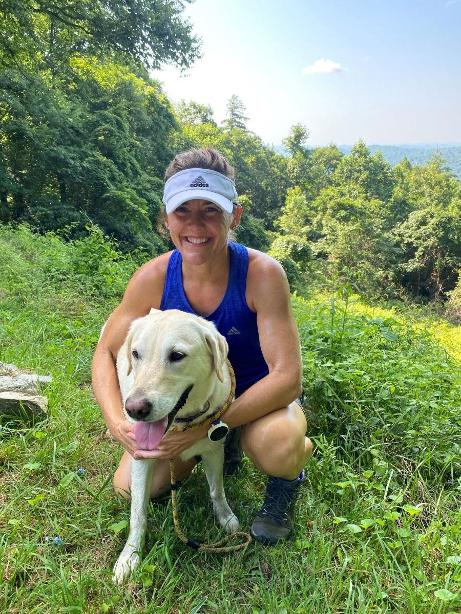

Strong & Well
Optimizing women's strength & wellness from the inside out
What we nourish our bodies with, and the lifestyle we choose, make a huge difference in our quality of life. Let me help you make the most of your choices so you can feel YOUR personal best!

About me
It's not just my profession. It's my passion!
With a combined 24+ years of professional fitness, health, and wellness experience, I'll be your biggest cheerleader along the way. I have walked many parts of this journey myself, so I also hope to mentor you along yours.
My ultimate goal is to help as many women as possible find their best wellness, so they can live a happy, healthy life with a very long healthspan!
Tracey
Services
Built around you
Services are based on each client's needs. At times, Strong & Well may also offer group programs on specific wellness topics.
Detailed lifestyle & health history review
Everyone starts with a DRESS program: Diet, Rest, Exercise, Stress management, and Supplements. It's built for long-term change instead of a quick fix, and it begins once your detailed intake forms are complete.
Functional lab screenings & reviews
Screenings take your DRESS program to the next level. We decide which ones to use after your first appointment. They stop the cycle of trial and error by showing exactly what YOUR body needs for long-term healing.
In-person or Zoom strength classes
New to lifting weights? Not comfortable at the gym? Not sure what you should be doing to optimize your body composition? Join my classes, at home over Zoom or in person if you're local. All you need is a few sets of dumbbells.
FDN packages include follow-up emails and sessions to support you along your journey.
Is this you?
The women who see the most success are
- Motivated and committed to taking THE biggest active role in their own health
- Open to lifestyle changes and functional approaches to healing, instead of only suppressing symptoms
- Looking for optimal wellness that restores energy and function in the body
- Able to see that tiny steps add up to huge long-term gains
- Realistic that problems which have existed for years won't resolve in days
If this sounds like you, I'd love to have a discovery call and see how I can help!
How it works
Our process
Connect to discuss your goals
We meet and form a personalized plan to reach your goals.
Run functional screens
Screenings show where your body is right now, so we can build a program and find healing opportunities.
Follow a personalized plan
I walk with you every step of the way as you follow your DRESS protocol.
Feel your best!
As we peel back the layers and give your body, mind, and spirit room to heal, you'll find a new BEST with every step.
Kind words
What others are saying
"I have been working out with Tracey for over five years. I am stronger than I ever thought possible!"
"Since I turned 40, I've felt like a completely different person. I struggled to sleep well, gained weight, got so hot, and my hair was getting thin. Tracey helped me understand what is happening and what I can do about it. She's taught me that it truly matters what you put in your body if you want to have energy, sleep well, improve painful periods, and so much more!"
"Tracey has been a blessing to me. I struggled with menopause symptoms for years: irritability, low energy, poor sleep, and weight gain. A time came when I needed to take control. Tracey was the answer."
"Through her functional nutrition courses, I learned how to improve my gut health, reduce toxins, and care for my whole being. It has been life changing. I feel lighter and healthier than I have in years. The best part: at 54, I had my best physical performance as a triathlete. Thank you, Tracey!"
Questions
Frequently asked questions
How much does the FDN approach cost?
Each plan is tailored to the individual's needs and goals. We'll start with a discovery call to see how I can help, then talk through program details once we decide which route serves you best.
Do I have to run functional screenings?
Some options start with basic lifestyle and food changes. Long-term healing, though, comes from screenings that speak to your own body's needs, so the most success comes from running them.
Do you accept HSA/FSA?
If your HSA is a debit-style card, you can usually use it toward screenings and programs. FSA eligibility varies, so check with your plan directly.
What if I don't see the results I expect? Is there a refund?
This is an opt-in model of self-care. Your results depend on your commitment to long-term healing, not a short-term quick fix. It takes time, commitment, patience, and grace. FDN is NOT a quick fix. There can be amazing positive steps, but no two journeys are the same, and there are no guarantees. Strong & Well will provide the best possible approach for your needs and circumstances; beyond that, it's up to you to follow through.
How is this different from my regular doctor?
The FDN approach does not diagnose anything. We provide accurate assessments of functional screenings alongside detailed intake forms, then combine them into a plan of action for long-term healing. We look upstream from your signs and symptoms so your body can heal itself, rather than putting a band-aid on symptoms with medication or surgery.
Let's talk
Ready to feel your best?
Email me to set up a discovery call. Sessions are by appointment only, in person or over Zoom.
"Take care of your body. It's the only place you have to live." Jim Rohn